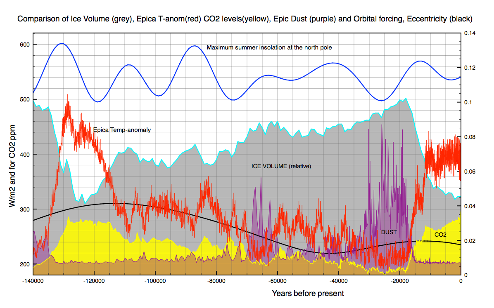
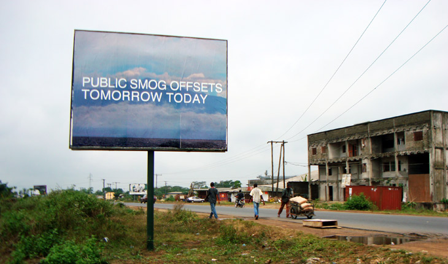
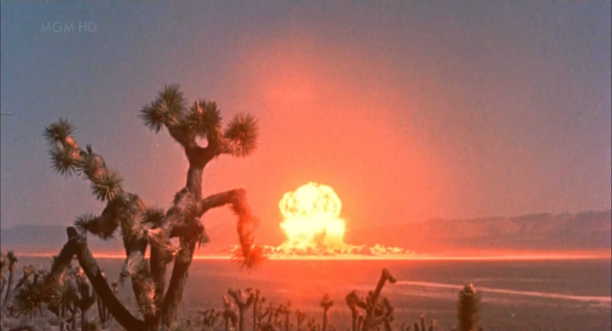
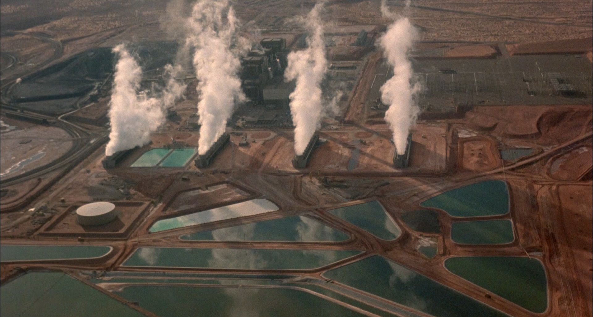
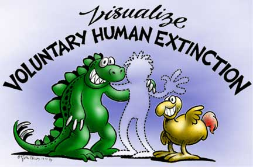
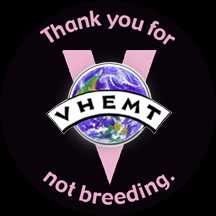

[18]
Timothy Morton, Hyperobjects: Philosophy and Ecology After the End of the World (2013)
[19]
Heather Davis, Etienne Turpin, Art In The Anthropocene, Encounters Among aesthetics, Politics, Environments and Epistemologies (2015), Critical Climate Change, pg5
[20]
Timothy Morton in VPRO Tegenlicht: Cultuurbarbaren, Alexander Oey, VPRO 2016
[LINK]
[21]
Heather Davis, Etienne Turpin, Art In The Anthropocene, Encounters Among aesthetics, Politics, Environments and Epistemologies (2015), pg317
[22]
Ibid. pg324
[23]
Ibid. Public Smog, pg341
[24]
Clive Hamilton, Utopias in the Anthropocene (2012), in a lecture for the Plenary sessions of the American Sociological Associations, transcription published on standford.edu [LINK]
[25]
Ibid.
[26]
Ulrich Beck, Climate for change, or How to how to Create a Green Modernity? (2010), Theory, Culture & Society pg254
[27]
Geologic Time Scale, long version, by Enchanted Learning, published on enchangedlearning.com [LINK]
[28]
Godfrey Reggio, Koyaanisqatsi: Life Out of Balance, (1982), United States: Island Alive
[29]
Tony Ortega, Scientologists: How Many Of Them Are There, Anyway? (2011) published on July 4, 2011, on villagevoice.com [LINK]
[30]
Motto of The Voluntary Human Extinction Movement [LINK]
[31]
About The Movement, by The Voluntary Human Extinction Movement, published on vhmet.org [LINK]
[32]
FoMO, Fear of Missing Out. A contemporary social angst that is describes as ‘a pervasive anxiety that others might be having rewarding experiences from which one is absent’.
***
Today, it is for the first time that modern Homo Sapiens are able to celebrate the birth an new geologic epoch. The oldest fossil remains of anatomically modern humans date to 195,000 years ago. These humans were there to see the Pleistocene end the Palaeolithic Ice Age, and later mark the beginning of the Holocene, that lasted between 11,500 and 12,000 years. But the first serious attempts to formulate a geological time scale were made in the last 18th century. So it is our current period that gives our generation the unique privilege to experience this transitional state.
Before we can go into what shape or form the glorification of an epoch could have, we need to understand how humans could possibly envision an geologic era, that has the potential to last another thousand, if not ten thousand years. The first people that encounter anything related to changes in our ecosystems are scientists, biologists and geologists. They travel the globe to collect samples from the land, and compare these to samples found in deeper layers of Earth, that are therefore older. These samples are analysed and with advanced technology and translated to data. This data then gets interpreted by computer software and visualised in legible graphs. Though, these are often not meant for the public, and the lines, abbreviations and data used in the fluorescent graphs are often gibberish for a layman. But so far, these graphs and visualisations are the only ‘tangible’ things that tell us that there are different periods. Despite the visible changes in water levels and more extreme weather, we are not able to perceive these elements all at once. British philosopher Timothy Morton coined the term hyperobjects[18] to describe ‘objects’ like global warming; but also a black hole, the biosphere, our solar system or the sum total of all plastic material in the world. Long lasting products, too big or too many of them to all perceive at once. It is this element of scale and intangibility, that makes these topics challenging for artists, philosophers and writers to tackle.

In 2015, Heather Davis and Etienne Turpin wrote about art in the Anthropocene and in their preface express the following: “[…]the current sense of depletion, decay, mutation and exhaustion calls for new modes of address, new styles of publishing and authoring, and new formats and speeds of distribution. As the pressures and re-alignments of this re-arrangement occur, so must the critical languages and conceptual templates, political premises and definitions of “life.” There is a particular need to publish in a timely fashion experimental monographs that redefine the boundaries of disciplinary fields, rhetorical invasions, the interface of conceptual and scientific languages, and geopolitical interventions.”[19]
Morton often speaks about the role of art in relation to hyperobjects, and global warming specifically: “[…]arts is definitely not just propaganda. Art is actually coming from a place of not knowing everything. How can you totally know what this piece of music is about? How can you totally know what this painting is about? Artist are people who are ready for things to be a little bit uncertain, not knowing what the consequences of what they going to put into that art is. And that is exactly what we need. We need this massive, human, cognitive, political, psychic upgrade to deal with what we’ve done. So art is not just representing stuff, it’s actually helping us to go there[20]. Morton refers to the myriad art projects that, more often active than passive, address problems surrounding this climate change. Where the passive projects are meant to create awareness and change publics mentality, in the latter, artists take the role of activists and actively try to communicate with decision makers.
With regard to addressing the public discourse, Marina Zurkow, Oliver Kellhammer, Fritz Ertl, and Una Chaudhuri’s project “Dear Climate”[21] attempts to reposition the “paste-up aesthetic”, and intervene false impressions that emerge in debates on climate change. The project describes itself as a training program in the form of posters, podcasts, a website and installation. Through posters, letters and podcasts, the project asks visitors (both online and during public exhibitions) to participate in addressing climate change as an entity.
In a playful way, people ask climate change questions and apologise and make promises to it, in a hope to communicate outside of the typical political discours surrounding the topic. “[…]instead of crisis and catastrophe, “Dear Climate” animates the familiar and ordinary; instead of desperation and heroism, it fosters playfulness and friendliness. Dear Climate is after a conceptual nudge rather than a paradigm shift.”[22]

In the mode of activism and engaging in an actual dialogue with decision-makers, American artist Amy Balkin launched in 2014 her ongoing project Public Smog[23]. Constructed on economic, political and legal activities, the intervention is an attempt to create a “clean-air” park in the atmosphere. These activities include purchasing and withholding emission credits in greenhouse gas markets (NOX and CO2), making them inaccessible to polluting industries. Fluctuating in scale and duration, the park have been successfully opened on three different locations between 2004 and 2014. The installation accompanying the project, exhibited in galleries all over the world, attempt to submit the Earth’s atmosphere for inscription on the UNESCO’s World Heritage List. Germany, as host to the dOCUMENTA 13 exhibition, was first invited to lead a coalition, to the nomination process for inclusion in the World Heritage list. The combined number of 800,000 visitors were asked to petition their respective governments by postcard from within the exhibition. A total of 90,000 signed postcards were shipped to Germany’s Federal Environment Minister. In 2012, a letter of reply in response the to postcard petition confirmed that Germany would not lead a coalition for the inscription.
In his talk Utopias in the Anthropocene, Public intellectual and Professor of Public Ethics Clive Hamilton quotes Ulrich Beck, and with it raises an unpopular opinion: “Let us close our ears, he tells us, to ‘depressing’ talk of catastrophe and shun the ‘negativity’ of ‘well-meaning green souls’. When the ‘world public’ (itself a utopian fantasy) wakes up to the fact that we are all in this together ‘something historically new can emerge, namely a cosmopolitan vision in which people see themselves ... as part of an endangered world ...’. He entertains the poignant wish that a golden era of ‘involuntary enlightenment’ will dawn.”[24]
I propose that the ‘involuntary enlightenment’ Beck refers to, is not realising that we need to change and actually obey that realisation. We are already in the stage of realisation (most of us recognise global warming, and those denying it do so to please their political agendas), acting accordingly would not be an enlightenment. The involuntary enlightenment would come from the opposition that is proposed with this suggested movement. To not fight back nor look away from the problem, but embrace it. “[…] we must find ways to navigate it, to accommodate whatever it throws at us, to work out how to live on a planet less liveable.”[25]
Thus glorifying the Anthropocene starts by facing the problem with courage and dispose of all negativities surrounding it. Where Dear Climate was already heading in the right direction, the mindset we must adopt is one of prospect and bravery and stay close to our believes. Beck describes how escaping to the future or the past are both not progressive. We are exactly where we should be: “Few progressives have turned around to face the future; and one can see why, for the progressive who turns around can no longer be a progressive. In the Anthropocene, in addition to the past we seek to escape, now we have a future we want to avoid; so we are squeezed from both ends. Isn’t it easier to turn back to the past, to take comfort in the familiar kinds of suffering from which we can still aspire to free ourselves? ‘Give us back our past’, is the cry all denial.”[26]
Let us look back at how previous epochs were celebrated with pivotal events[27]. An estimated 4.5 billion years ago an unstable rock orbiting a star we now call the sun, was struck by one of the thousands of other rocks circling about in space. Through the sun’s gravitational pull, it still remained within its orbit, but the rocks surface started cooling down and the solidifying of the Earth's continental and oceanic crusts began. 1.5 billion years later, the now solid rock celebrated life by allowing the earliest organic structures to swim its oceans. As a result, oxygen began to form in the atmosphere. The Cambrian period came along (540 to 500 million years ago) and an explosion of life occurs. Though, due to climate change and the planet cooling down, this period came to an abrupt end, killing 50% of all animal families. The Ordovician period that followed, flourished with the first primitive plants on land. Again, this period ends in a huge extinction due to ice sheet forming. We fast forward to the heyday of the dinosaurs (146 to 65 million years ago), when Earth formed its continents to a modern-day look. Just as all the previous epoch, mass extinction ended the period. Yet this extinction was caused by an extraterrestrial intruder. An astroid (between 6 to 15km in diameter) hit Earth and its dust and debris thrusted into the atmosphere. It would have blocked most of the sunlight for months, and lowered the temperature globally. The so called K-T extinction obliterated the dinosaurs, 80-90% of marine species and about 85% of the land species. This event however, allowed the first Homo Sapiens to evolve and mammoths, mastodons, saber-toothed cats and other Pleistocene megafauna were there to feed the hungry humans. But this era wouldn’t be one without another mass extinction: large mammals and many birds were wiped out about 10,000 years ago. Cause: another long lasting ice age.
Since the dawn of the planet, each new epoch has been celebrated with the extinction of multiple species, allowing the birth of many others. So too will the future of the Anthropocene cause the end of many animal and plant species. If we are to recognise the Anthropocene in the first place, we will have to come to terms with this tragic fact. For our own species to survive we will have to fight the challenging changes upon our horizons. Many non-wealthy countries will have to endure death in various ways because of our past and future interventions. But like mentioned before, depressing talk about catastrophe is not gonna help us in any way. The arts can help us see beauty in the grandeur of our many worldwide alterations.

In 1982, Godfrey Reggio released the experimental, documentary-style film Koyaanisqatsi: Life Out of Balance[28]. Without any characters, plot and narrative structure, the cult film is considered an ‘environmental masterpiece’. Through mesmerising shots (primarily presented in slow motion or time-lapse footage) the transition from old nature into a technological milieu, into mass technology of life is captured. The stunning cinematography that Ron Fricke made possible, is able to transform the images of destruction and industrial violence into a beautiful, captivating experience. Accompanied by Philip Glass's well celebrated original score, the film presents the beautification of industrialisation in contrast to nature. Yet there is no conflict. The images are presented in a way that shows both differences and similarities between the two worlds, but also illustrates how they can coexist. Reggio film shows big gestures and implies his vision on the images he presents. It is gestures like these (the glorification of the unusual) that are necessary to convince people to join a movement that supports a view that is frowned upon by environmentalists.

We see this type of conviction reflect in a infamous group with onorthodox beliefs, a serious following and that is known for its use of grandeur presentations. The Church of Scientology, created by L. Ron Hubbard, was in 1993 officially recognised as a religion. Since its establishment they have encountered a lot of opposition and controversy. Their beliefs are based on Dianetics, a set of ideas and practices regarding the metaphysical relationship between the mind and body, created by L. Ron Hubbard himself. The Dianetics first surfaced in 1950 in his article Dianetics: The Evolution of a Science, published in the Astounding Science Fiction magazine. Scientology is known for their members paying incredibly large sums of money to participate in so called “auditing” sessions. These sessions teach that increased spiritual awareness and physical benefits are accomplished through these counselling. The religion is often ridiculed by outsiders and has been accused of being a business, often given to criminal acts, masquerading as a religion. But despite being one of the most controversial religious organisations, and there relatively small following (15,000 to 40,000 people[29]), Scientology comes across as a well established and powerful organisation. With their monumental and grandiose visual language, they are able to convey an overwhelming and seemingly empowering message. The church speaks to their believers from a high (with gold and silver decorated) pedestal. Their illuminating stages, bombastic visuals and empowering tone of voice flowing throughout every form of communication, carry convincing statements that dazzle their believers, and make them fail to see it as flat Hollywood-like decor. With this they are able to obscure critical perspectives.
Their animated communication shows 3D visuals you would expect in the title sequence of a recent Marvel superhero movie, while the voice-over is reminiscent to the voice announcing the movie in the trailer. They are able to translate the hyperreal renders to actual physical stage design, on a scale you would imagine the objects to be. Shots of their current leader David Miscavige, surrounded by the almost ironic amount of reflecting objects representing a stage desk, make it look like the man is projected in an artificial environment, achieved by chroma key compositing. There presentations are influenced by a mix of Roman, Greek and Egyptian styles with a dash of Science Fiction, portrayed by contemporary computer generated images. With the exponential growth of computer technology, so too does the physical and artificial scale of their visuals grow, with the pinnacle of their stage performances being the epic 2015 New Year’s celebration. While influential heads within the organisation gave speeches, the public beheld an enormous decorated stage and, as per usual, an 10 meter high portrayed of L. Ron Hubbard. Even the light spots on the side of the stage showed, metal, illuminating artificial beams of light blasting in every direction, aiming for the ceiling.
Apart from the objectionable acts committed by de organisation, the Church of Scientology is a perfect example of a movement that is able to convince people to participate in a way of thinking that is based on unconventional concepts. It is this type of dedication and conviction that is necessary to get our nations and its inhabitants to glorify this epoch.
An example of another group that is often ridiculed for their extreme ideas, yet I praise for their dedication to set forth an actual movement, is The Voluntary Human Extinction Movement (VHEMT). They consider themselves an environmental movement that calls for all people to abstain from reproduction, to cause the gradual voluntary extinction of humankind. With their motto being “may we live long and die out”[30], the group calls for phasing out the human race, allowing the Earth’s biosphere to return to good health. “We’re not just a bunch of misanthropes and anti-social, Malthusian misfits, taking morbid delight whenever disaster strikes humans. Nothing could be farther from the truth. Voluntary human extinction is the humanitarian alternative to human disasters.”[31] By not reproducing, they call people to fight over population and the defacing of the environment. This extreme view on saving the planet raises a good point. If only for being an actual alternative solution to the damage we have done to our surroundings by trying to grow as a species.

The dinosaurs who dominated the Earth for 180 million years did not choose to go extinct, when a meteor came blazing through our atmosphere, destroying most of life the Earth. They were products of millions of years of evolution, but never capable of making such conscious decisions. Yet if we are so intelligent as we claim, on top of the food chain for many million years and now proven to be capable of altering entire ecosystems, should we not take matters into own hands? As described earlier, each new epoch introduced the extinction of many species, (most of the time) through climate change. Climate change will not make our species go extinct, but if we are the cause of it in the first place, do we deserve to be in the front row of this new era? I say yes. If the dinosaurs had a choice, they would still be here. To live on this unpredictable planet is to adapt, and our history learns us that we are able to do so if we must.

Celebrating the Anthropocene, and with it our ability to master and control our environments, can be considered the final act of a play in which we assigned ourselves the starring role. However, the celebration is not something we do as a species. Far too many nations will see the immediate consequences of our need to grow. The wealthy Western countries are those that, no matter their environmental views, benefit from the changes that are addressed in earlier chapters of this thesis. Given our current social position, the Western world is most likely to glorify this epoch, for it is a sum up of the effects of our intentions to grow as a species.
Each year, New Year celebrations mark the end of a year and the beginning of a new. Joyfully people come together, count down the seconds till midnight and exult in ecstasy for a new year to come. The next morning, however, can be a bitter awaking. Nothing is actually gained, the upcoming days seem to not recognise the change and the ‘holidays’ are over. The dragging routine that capitalism demands us to participate in starts over, and our New Year’s resolutions already seem like unrealistic goals made in moments of euphoria. Is this not the perfect moment to, for another whole month, celebrate our current geological era? It could extend our reason to commemorate a period in which we collectively achieved progression. By doing so, we take the time to honour the technological advancements that bring us leisure and escapism every day, and will continue to do so at an exponential rate. Within this period we can use celebration not as escapism from the negativity surrounding our growth, but as a way to acknowledge reality. It will give us reason to improve upon it, since it is in our best interests. By neglecting a big part of our species and others in danger, a certain amount of escapism is present. This will, however, not conflict with our current egocentric perspective on the world. And surely our FoMO[32] will make sure everyone called upon, will engage in this new, yearly ritual of the West. To be clear, it should not be a feast in which we stop and think about our past interventions and how they affected the world. It is one in which we are optimists that celebrate all the good things we gained. Together, we are then able to start the new year with a positive lookout on the future and thrive as a well adapted species. We are going through the turn of an epoch and should each year celebrate its and our existence, till a new era may arrive.
The Finale, or How We Conclude This Thesis
[33]
Philipp Pattberg and Fariborz Zelli, Environmental Politics and Governance in the Anthropocene (2016), Anthropocene: Delusion, celebration and concern by Simon Hailwood, pg47
[34]
Bruno Latour, Love Your Monsters: Why We Must Care for Our Technologies As We Do Our Children (2012), published on thebreakthrough.org [LINK]
***
The Finale
or, How We Conclude This Thesis
As many would claim, this time is not one that is to be celebrated, for that would hinder critical perspectives, that could possibly pose a solution to global warming. Yet celebrating is what we did when we decided to name the epoch to a Greek word that translates to Human. And glorifying it we did when we, very early one, saw an upward trend in CO2 emissions, yet all continued to take advantage of the miracles fossil fuel burning brought us. The consequences of celebrating this epoch will mean the exclusion of a big portion of our species in obtaining pleasure from doing so. A closer look on our current habits reveal however, that we have grown accustomed to this act. Right now, we cannot look away from reality anymore. We know we will have to take action and face the consequences. If we let us take down by all negativity surrounding the issue, we will end up in a downwards spiral that will give us no prosper future to strive towards to. To celebrate is to positively tackle the issue by empowering ourselves even more, because we want to survive!
We are able to utilise our current systems and have contemporary media entertainment and advertising anticipate the issue in a tone of voice that will be heard by its responders. This is another example of using our powers to adapt when nature demands us to.
I must address a necessary element to understand what brought us in this position of environmental uncertainty. Simon Hailwood summarises this thought perfectly: “It is important to remember that the environmental crisis is generally a matter of the unintended consequences of human activity in an arena – let us call it nature – that is highly complex and unpredictable. The relevant environmental facts do not generally concern the foreseen and intended consequences of courses of action pursued as part of a worked-out master plant to control Earth’s systems to produce the best overall consequences in terms of human interests.”[33] The Anthropocene may mark the pinnacle of our stupidity, arrogance and naivety, but it should give hope that new times always come with positive change for those in control. In this epoch we are the creators, engineers and permanent global agents of a sustainable human nature.
“Dr. Frankenstein's crime was not that he invented a creature through some combination of hubris and high technology, but rather that he abandoned the creature to itself.” – Bruno Latour[34]
(The Anthropocene Epoch has not been officially recognised by the International
Commission on Stratigraphy and the International Union of Geological Sciences.)